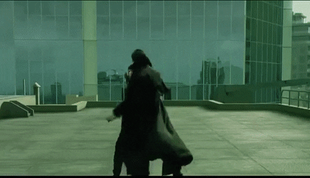
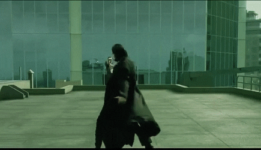
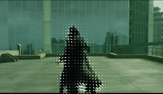
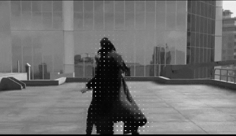

Nos deux algorithme prennent en entrée deux images pour traiter leurs déplacement optique,c'est à dire la vitesse de mouvement des pixels entre deux images consécutives a des fins d'utilisation dans la compression de fichiers vidéos
voici nos deux images pour les tests:
 L'utilisation de l'algorithme de horn et schunck offre un résultat plus proche de la réalité.
Néanmoins, son processus itératif est complexe et couteux, ce qui impact le temps d'execution du programme
L'algorithme de multi résolution obtient une interpolation des vecteurs vitesse en utilisant une pyramide d'image puis en interpolant le vecteur avec une résolution de plus en plus grande
Cette approche offre un gain de temps considérable (5 à 10 fois plus rapide) .Mais une justesse des résultats plus moindre.
En implémentant les algorithmes de Horn et Schunck et de multi-résolution sous Python, j'ai acquis plusieurs compétences techniques et pratiques en traitement d'images et en programmation. J'ai compris les concepts de base de l'optique et de la cinématique, et j'ai appris à utiliser des techniques telles que le filtrage d'images, la détection de contours et la mise en correspondance de points clés pour le traitement d'images.
J'ai également développé mes compétences en programmation Python en manipulant des tableaux, en gérant des fichiers, en écrivant des fonctions et en créant des graphiques. En outre, j'ai compris les concepts de base de l'optimisation et de l'interpolation, ainsi que les algorithmes utilisés pour la mise à l'échelle d'images.
Enfin, j'ai amélioré mes compétences en analyse de données en utilisant des graphiques pour visualiser les résultats et en interprétant les résultats pour tirer des conclusions pertinentes. En somme, l'implémentation de ces algorithmes m'a permis d'acquérir des compétences pratiques et techniques précieuses en traitement d'images, programmation Python, optimisation, analyse de données et visualisation de données.
Cette fonction prend en entrée deux images et calcule les gradients de ces images dans trois directions différentes: horizontale, verticale et temporelle. Les gradients sont des valeurs qui indiquent la rapidité à laquelle l'intensité de la lumière change dans chaque direction.
Pour calculer ces gradients, la fonction utilise des matrices spéciales appelées "masques de convolution" qui sont appliquées sur les images. Ces masques de convolution sont des petites matrices qui permettent de calculer des valeurs pour chaque pixel de l'image en fonction des valeurs des pixels voisins.
Ensuite, la fonction utilise une fonction spéciale appelée "convolve2d" pour appliquer les masques de convolution sur les images et calculer les gradients dans les trois directions. Les résultats sont renvoyés sous forme de trois matrices: une pour les gradients horizontaux, une pour les gradients verticaux et une pour les gradients temporels.
def Calculer_gradients(a,b):
##Masques de convolution pour approximer les gradients:
# Horizontal
mask_x=np.array([[-1,1],[-1,1]])
# Vertical
mask_y=np.array([[-1,-1],[1,1]])
# Temporels
mask_t1=np.array([[-1,-1],[-1,-1]])
mask_t2=np.array([[1,1],[1,1]])
## Convolution des gradiants a l'aide de convolve2d
Ix = signal.convolve2d(a,mask_x,mode='same') + signal.convolve2d(b,mask_x,mode='same')
Iy = signal.convolve2d(a,mask_y,mode='same')+signal.convolve2d(b,mask_y,mode='same')
It = signal.convolve2d(a,mask_t1,mode='same')+signal.convolve2d(b,mask_t2,mode='same')
return Ix,Iy,It
Cette fonction, appelée "Approximer_V", prend en entrée une image, ainsi que les matrices de gradients horizontaux, verticaux et temporels (Ix, Iy et It) calculées par la fonction "Calculer_gradients". Elle prend également deux valeurs de paramètres alpha et delta.
La fonction commence par créer une matrice spéciale appelée "mask_lap" qui est utilisée pour lisser les vecteurs de vitesse. Elle initialise ensuite deux matrices u et v avec des valeurs nulles pour représenter les vecteurs de vitesse initiaux.
Ensuite, la fonction utilise une boucle "while" pour itérer jusqu'à ce que les vecteurs de vitesse convergent vers une solution. Pendant chaque itération, la fonction calcule une moyenne pondérée des vecteurs de vitesse précédents en utilisant le masque "mask_lap". Elle utilise ensuite les gradients Ix, Iy et It pour calculer une matrice p, qui est utilisée pour mettre à jour les vecteurs de vitesse.
La fonction calcule également une matrice d pour utiliser dans la mise à jour des vecteurs de vitesse. À chaque itération, elle met à jour les vecteurs de vitesse en soustrayant un terme proportionnel à Ix et Iy pondérés par p/d. Les valeurs de u et v sont mises à jour à chaque itération jusqu'à ce que la différence entre les vecteurs de vitesse de l'itération précédente et de l'itération actuelle soit inférieure à une certaine précision définie par delta ou que le nombre maximum d'itérations soit atteint.
Finalement, la fonction retourne les matrices u et v qui représentent les vecteurs de vitesse mis à jour. Ces vecteurs de vitesse peuvent être utilisés pour estimer le déplacement du contenu de l'image.
def Approximer_V(img,Ix,Iy,It,alpha,delta):
mask_lap=np.array([[1/12,1/6,1/12],[1/6,0,1/6],[1/12,1/6,1/12]])
## Initialisation des vecteurs vitesse V(u,v)
u=np.zeros(img.shape)
v=np.zeros(img.shape)
#compteur d'itérations
i=0
while True:
i+=1
# moyenne des u
u_moy = signal.convolve2d(u,mask_lap,mode='same')
# moyenne des v
v_moy = signal.convolve2d(v,mask_lap,mode='same')
#u précèdent pour le calcul de différence
u_1 = u
# p = Ix(Ix * u_moy + Iy * v_moy + It)
p1 = np.multiply(Ix,u_moy)
p2 = np.multiply(Iy,v_moy)
p = p1+p2+It
# d = 4 * a + Ix^2 + It^2
d = (4 * alpha + Ix**2 + Iy**2)
# u = u_moy - Ix * p/d
u = u_moy - np.multiply(Ix,(p/d))
# v = v_moy - Iy * p/d
v = v_moy - np.multiply(Iy,(p/d))
#diffèrence entre u-1 et u
difference = np.linalg.norm(u-u_1,2)
# si diff < précision ou itération > 300 , On s'arrête
if difference < delta or i > 300:
break
return u,v
def Afficher_fleches(u,v,beforeImg):
# taille des vecteurs vitesse
scale = 2**9
ax = plt.figure().gca()
ax.imshow(beforeImg, cmap = 'gray')
for i in range(0, u.shape[0], 8):
for j in range(0, u.shape[1],8):
dy = v[i,j] * scale
dx = u[i,j] * scale
magnitude = (dx**2 + dy**2)**0.5
#draw only significant changes
if magnitude > 0.005 and (j-dx)>0 and (i-dy)>0:
ax.arrow(j,i, dx, dy, color = 'white')
plt.axis('off')
plt.draw()
plt.show()
def HornEtSchunck(a,b,base,aff = False):
# Calcul des gradients
Ix,Iy,It = Calculer_gradients(a, b)
# On cherche une approximation des vecteurs vitesse V(u,v) itérativement
u,v = Approximer_V(a, Ix, Iy, It, 15**2, 10**-3)
# On affiche les vecteurs vitesses sur l'image sans flou
if (aff):
Afficher_fleches(u,v,base)
return u,v
La fonction Pyramide prend une image en entrée et renvoie trois versions de cette image, réduites respectivement à 100%, 50% et 25% de leur taille d'origine, en utilisant la fonction de transformation de la bibliothèque scikit-image. Ces trois versions de l'image forment ce qu'on appelle une pyramide d'images.
def Pyramide(img):
size_x = len(img)
size_y = len(img[0])
img_2 = skimage.transform.rescale(img,0.5)
img_3 = skimage.transform.rescale(img,0.25)
return img,img_2,img_3
La fonction Interpol_V prend deux tableaux représentant les composantes horizontale et verticale d'un vecteur de mouvement. Elle utilise l'interpolation bicubique pour augmenter la résolution de ces tableaux en doublant leur taille. Elle renvoie ensuite les deux tableaux avec une résolution augmentée. Cette fonction est utile pour la correction de mouvement dans les séquences d'images.
def Interpol_V(u,v):
x = np.arange(0,u.shape[1])
y = np.arange(0,u.shape[0])
fit = interpolate.interp2d(x,y, u, kind = 'cubic')
u = fit(np.linspace(0, u.shape[1]-1, len(u[0])*2),np.linspace(0, u.shape[0]-1, len(u)*2))
x = np.arange(0,v.shape[1])
y = np.arange(0,v.shape[0])
fit = interpolate.interp2d(x,y, v, kind = 'cubic')
v = fit(np.linspace(0, v.shape[1]-1, len(v[0])*2),np.linspace(0, v.shape[0]-1, len(v)*2))
return u,v
def Multi_res(a,b):
# 3 niveau de résolution 1/1, 1/2, 1/4
a,a_2,a_3 = Pyramide(a)
b,b_2,b_3 = Pyramide(b)
#On applique la méthode de Horn et Schunck
u,v = HornEtSchunck(a_3,b_3,a_3)
#On Interpole V(u,v) deux fois
u,v = Interpol_V(u, v) # *2
u,v = Interpol_V(u, v) # *2
#On affiche l'image
afficher_flèches(u, v, a)
return u,v